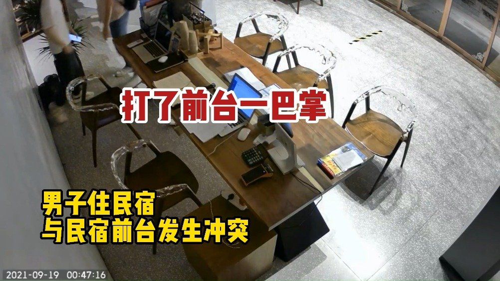

博友如果有这个人的同学、同事、邻居、朋友，一定要离他远一点。这种人真的可怕，沾上会倒大霉。@1818黄金眼:【前一秒有多嚣张 后一秒就有多怂】#男子打人后派出所变脸#19号凌晨，杭州拱墅区一家民宿，一名喝过酒的男子和前台发生冲突，打了前台，后拉扯中掉进河里被民警捞起带回派出所，在派出所里，男子上演了疯狂变脸模式。黄金眼融媒的微博视频  1574万次播放 01:58
其实我有时候会想一件事。你说咱们对一个人好，是不是会希望ta也对自己好。咱们对一个人有付出，就会希望那个人也回报自己。但实际上，我们对一个人好，对一个人付出，应该是我们自己愿意的事情，这个好和付出本身就会让自己开心。我就是想对你好，你对我好不好，是不是回报我无所谓。这是不是才是最重要的，才是所谓的爱。至于有没有回报，那个恐怕不应该是付出的理由和目的。如果只是因为想得到回报才付出，那恐怕不是真爱。不知道对不对，一个想法。
过去一年，150卖出19份，买入14份，没有在高位区域加仓，甚至做了减仓。S卖出9份，买入14份，但要注意S是“永续买入”模式，一年时间只买了5份，等于积累了大量应买未买资金。我们的卖出，基本都是几十个点甚至翻番的品种。买入的，都是大幅下跌后未来可期的。高位震荡，你我并非接盘侠。那么，如果下跌，你应该是怎样的心情？
 黄金眼融媒的微博视频
黄金眼融媒的微博视频